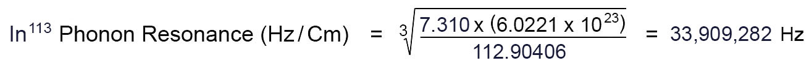
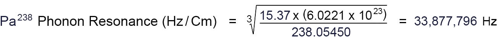

对 W. Lussage（1965）、J. Champion（2001）、A. Putney（2013–2020）三代文献的逐条复算。 覆盖 16 条带完整参数的嬗变反应、2 条传能型工艺、4 条仅具名的路线， 核三本账（质量数 A / 电荷 Z / 能量 Q），并给出这套体系真正的五条通项规律。
这套体系有三层，必须分开评价：算术层几乎无懈可击，命名层错了两处，物理层缺了一整个守恒律。 混在一起谈，只会得出「全是骗术」或「全是真理」两个都错的结论。
① 式一是立方根，而原文印的正是立方根。原文写作 ³√（根指数「3」排在根号
左侧的缺口里）。我第一版记成「原文把 ∛ 印成 √」——那是我读错了，原文没有错：
这些书里公式是贴图，我从文本层抠字，自然抠不到根指数（详见 §1.1）。
它自己代进去的铝算例（d=2.70，m=26.98154 → 39,205,620 Hz）只有开立方才对得上；
开平方差 6,261 倍。用 ∛ 回归 7 个元素，最大相对误差 3.1×10⁻⁴。
② 式二是干净的。T = ln(f起/f止)/Ec + St，物理内核是
「热膨胀把两个晶格常数拉到相等」。四个温度复算全部命中到 0.2 °C，零自由参数。
③ 质量算术是认真的。16 条反应里 15 条质量数严格配平，偏差 0.003–0.103 u， 平均 0.024 u。这不是随手编的数字。
④ 两类反应的电荷缺口方向，符合真实的 β 稳定线。吸气体的反应缺 n→p， 抛气体的反应缺 p→n —— 方向全对，说明作者对核素图的手感是真的， 只是没把这一列写出来。
① 那个「Hz」不是频率。∛(d·Na/m) 的量纲是 cm⁻¹（波数），
数值 1/∛n = 0.257 nm 就是金的等效原子间距（与硬球直径比恒为 0.888±0.004，七个元素一致）。
当振动频率用，等于漏乘声速 10³ m/s —— 与真声子频率差 3.2×10⁵ 倍。
② 电荷守恒整条缺席。10/16 条 Z 不守恒，缺口最大 12 个正电荷。 质量账配平是容易的（整数加减），电荷账才是真正的约束 —— 而原文从未列过 Z。
③ 能量账全部为负或全部反常。10 条吸能（最贵 95.5 MeV），6 条放能（Bi 系，3–19 MeV）。 原文把它们统称「low energy / safe」，但 43.4 °C 的热噪声只有 27 meV， 与最便宜的 3.4 MeV 差 1.3×10⁸ 倍。
换句话说：这是一套「几何上自洽、算术上认真、命名上错位、核物理上缺一条腿」的体系。 它最值钱的部分是「用原子数密度算等效间距」这个几何量；最不能信的部分是把它叫「Hz」并宣称能搬动原子核。
把「H → Pt」「Pb → Pt」两条设想路径逐步代入式一、式二，算出每步真正要求的 频率 / 间距 / 温度 / 炉型，并用三条与膨胀系数无关的判据做否决检验： 《嬗变路径条件核算》。
一句话结论：61 步里 0 步落在本文已发表的温区内，30 步的温度低于绝对零度。
问题在方向，不在温度——式二要求每步走向 a 更大的元素，而 H、Pb 的 a 都比 Pt 大。
我第一版写的是「原文排版把 ∛ 印成 √，同一页出现过五种写法」。这句话是错的，责任在我的读取方式，不在原文。
原因很具体：这几本书里公式是贴图，不是文字。每条公式在 PDF 里是一张 1310×108 的图片，
文本层那一行只剩下占位符。我用正则从文本层抠字，抠出来的自然是 √、3√、
3∛ 这类残片——那不是「原文的排版变体」，那是同一张 ³√ 图片的五种读坏方式。
把图片按原始分辨率逐张抽出来看，原文一律是 ³√：根指数「3」规矩地坐在根号左侧的缺口里。
| 我第一版记的（来自文本层） | 原文实际印刷（来自图片层） | 读坏的原因 |
|---|---|---|
| √(d × Na / m) | ³√( d × (Na) / m ) | 根指数「3」在文本层丢失 |
| 3∛(d × Na) | ³√( d × Na / m ) | 「3」被抬成前缀；分母 m 被截断 |
| 3√(7.14 × 6.0221e23 / 63.92914) | ³√( 7.14 × (6.0221×10²³) / 63.92914 ) | 「³」退化成普通「3」；上标 10²³ 塌成 e23 |
| ∛(d × Na rd* Na flevago* So Constant) | 同一条 ³√ | 图片位置的字符流串位——这一条才是真乱码 |
按 ∛ 复算：33,909,282 ／ 33,877,796 ／ 39,205,620——三条全部与原文末位一字不差 （用原文自己的 Na = 6.0221×10²³ 时残差为 0）。若把左边那个「3」当系数（3 × √）， In¹¹³ 会得 5.9×10¹¹，差 17,000 倍 —— 算术自己排除了这种读法。


所以结论的性质变了：不是「原文错、我改正」，而是「原文对、我读错」。 用 ∛ 是原文自己的意思，不是我替它换的算子。下面 §1.2 要谈的只剩口径—— 这个数到底是不是「Hz」，与根指数无关。
三条独立证据（证明这个数是 ∛n，而不是频率）：
Champion 的数据表里有一列叫 phonon spacing。它的数值恰好是频率的倒数，
也就是 0.257 nm —— 金的原子间距。作者自己知道那是长度，
却把倒数那一列写成「Hz」。这是命名错位，不是数值错。
这条式子的物理含义可以一句话说完：把两个元素的等效原子间距之差，除以热膨胀率，就是需要的升温幅度。 因为 ln(f起/f止) ≈ ln(a止/a起) ≈ Δa/a。
| 过程 | f 起 Hz | f 止 Hz | ln 比 | Ec (1/K) | 复算 °C | 原文 °C | 判定 |
|---|---|---|---|---|---|---|---|
| O16 → H1 | 3,775,146 | 3,773,188 | 5.19e-04 | 2.91e-05 | 37.8 | 37.8 | 命中 |
| Ag107 → Au197 | 38,962,540 | 38,945,310 | 4.42e-04 | 1.89e-05 | 43.4 | 43.4 | 命中 |
| Zn64 → Pd108 | 40,667,742 | 40,632,426 | 8.69e-04 | 3.02e-05 | 48.8 | 48.8 | 命中 |
| Al27 → Au197 | 39,205,709 | 38,945,310 | 6.66e-03 | 2.31e-05 | 308.5 | 308.5 | 命中 |
| Al27 → Ag107 | 39,205,709 | 38,962,540 | 6.22e-03 | 2.31e-05 | 289.3 | 269.3 | 差 20.0 K |
最后一行那 20.0 K 不是公式错，是原文漏加 St：289.3 − 20 = 269.3。 同一页的上一条（Al→Au）加了 St，这一条没加。这是原文的一处抄写不一致。
所有工艺都是同一个两阶段动作，只是温度、气体、炉型不同。
37.8 / 43.4 / 48.8 / 269.3 / 308.5 —— 这五个温度看着零散，其实是式二在三种尺度上的取值：
| 温区 | 温度 | 传能介质 | ln(f起/f止) | 炉型 | 典型反应 |
|---|---|---|---|---|---|
| 生物温区 | 37.8 °C | O16 气体 | 5.2×10⁻⁴ | 水相常压 | Ag→Pd、Zn→Cu、Au→Pt |
| 生物温区 | 43.4 °C | Ag107 自身 / CO₂ | 4.4×10⁻⁴ | 密封刚玉坩埚 | Ag→Au |
| 生物温区 | 48.8 °C | Zn64 自身 / CO₂ | 8.7×10⁻⁴ | 密封坩埚 | Zn→Pd |
| 金属温区 | 269.3 °C | Al27 金属箔 | 6.2×10⁻³ | 空气炉 | Cu→Ag |
| 金属温区 | 308.5 °C | Al27 金属箔 | 6.7×10⁻³ | 空气炉 | Cu→Au |
| 坩埚温区 | 未公布 | 真空 / 控气 | — | 真空炉 / 控气炉 | Bi→Au、Bi→Pt |
为什么低温链只有 40 °C 上下？因为气体（O、H）与同位素对（Ag107/Au197）的等效间距差只有万分之四到万分之九； 而 Al 跟 Ag/Au 差千分之六。差十几倍，除以同样量级的膨胀系数，温度就差十几倍。 这不是两套机制，是同一个公式的两个档位。
这是整套工艺里最实用的一条，原文写得很清楚：
聚合型（目标原子量 > 起始）——需要间隙气体原子参与 ⇒ 用控气炉
（controlled gas environment），把 CO₂/O₂ 压进晶格。
裂变型（目标原子量 < 起始）——需要把多余质量排进空位 ⇒ 用真空炉
（vacuum furnace），让被挤出的原子有地方去。
| 部件 | 规格 / 做法 | 作用 |
|---|---|---|
| 反应器 | 密封刚玉（氧化铝）坩埚 | 隔绝空气；高温链必需 |
| 气体源 | CO₂ 或 O₂ 纳米气泡 | 提供 C/O 原子（聚变）或带走 H（裂变） |
| 纳米气泡喷嘴 | 碳陶喷嘴（60% 碳 + 40% 黏土，湿法成型，>1000 °C 还原气氛烧结） 或更便宜的炭化树枝（约 25 美元/个，250 °C 干馏 25 分钟） | 产生 <200 nm 气泡，提高气体溶入率 |
| 传能介质 | 铝箔 / 铝粉（低温金属链）；Al 纳米粉（铜→金） | 把目标频率「灌」给起始金属 |
| 分离 | 氧乙炔焰 + 骨灰坩埚；硼砂助熔；硝酸提纯 | 利用熔点差（Bi 271.4 °C vs Au 1090 °C） |
⚠ 顺带一条商业信息：三种高温工艺（Bi→Au、Bi→Pt、Cu→Ti₃Au）在 2020 年由作者以 每个 1,111 美元 + 标准 NDA 出售；Rh 工艺需另询。 这意味着关键操作参数（尤其 Bi 系的温度曲线）不在公开文献里 —— 下面的案例表对此明确留白。
「An isotope with a phonon frequency just a few hundred kHz higher than the target element can be heated to the precise temperature at which it radiates the required phonon frequency — for a distance of 0.03 mm into the surrounding lattice of the starting element.」 Quasicrystals & Bismuth to Gold, p.128
翻译成可检验的话：介质频率 − 目标频率 = 几百 kHz，作用深度 0.03 mm（表层工艺）。
| 配对 | f 介质 | f 目标 | Δf | 角色 | 符合「几百 kHz」？ |
|---|---|---|---|---|---|
| Al27 → Ag107 | 39,205,709 | 38,962,540 | 243.2 kHz | 金属介质 | 符合 |
| Al27 → Au197 | 39,205,709 | 38,945,310 | 260.4 kHz | 金属介质 | 符合 |
| Ag107 → Au197 | 38,962,540 | 38,945,310 | 17.2 kHz | 起始金属自身 | 小一个量级 |
| Zn64 → Pd108 | 40,667,742 | 40,632,426 | 35.3 kHz | 起始金属自身 | 小一个量级 |
| O16 → H1 | 3,775,146 | 3,773,188 | 2.0 kHz | 气体对（生物链） | 不适用 |
这条判据只覆盖它举的那一个例子（Al）。起始金属与目标的频差其实小一个量级， 气体对更小 —— 说明「几百 kHz」是金属介质专属的经验值，不是普适定律。
下表收录文献中给出完整参数的全部反应。A 账与 Z 账为本次复算结果， Q 为质量亏损换算（正=放能，负=吸能）。频率一列用原文值，复算值另差 <1×10⁻⁴。
| # | 反应 | 吸收 | 抛射 | 温度 | ΔA | ΔZ | Q (MeV) | A 账 | Z 账 |
|---|---|---|---|---|---|---|---|---|---|
| 1 | Ag107 → Au197 | C + 5O | 2H | 43.4 °C | 0 | −12 | −95.53 | ✓ | ✗ |
| 2 | Ag109 → Au197 | 2C + 4O | — | 43.4 °C | 0 | −12 | −76.53 | ✓ | ✗ |
| 3 | Zn64 → Pd108 ⋆ | C + 2O | 2H | 48.8 °C | +2 | −4 | — | ✗ | ✗ |
| 4 | Zn66 → Pd108 | C + 2O | 2H | 48.8 °C | 0 | −4 | −3.42 | ✓ | ✗ |
| 5 | Zn67 → Pd108 | C + 2O | 3H | 48.8 °C | 0 | −3 | −9.69 | ✓ | ✗ |
| 6 | Au197 → Pt196 | O | H + O | 37.8 °C | 0 | 0 | −5.78 | ✓ | ✓ |
| 7 | Ag107 → Pd106 | O | H + O | 37.8 °C | 0 | 0 | −5.78 | ✓ | ✓ |
| 8 | Ag109 → Pd108 | O | H + O | 37.8 °C | 0 | 0 | −6.49 | ✓ | ✓ |
| 9 | Zn64 → Cu63 | O | H + O | 37.8 °C | 0 | 0 | −7.71 | ✓ | ✓ |
| 10 | Zn66 → Cu65 | O | H + O | 37.8 °C | 0 | 0 | −8.92 | ✓ | ✓ |
| 11 | Bi209 → Au197 | 真空 | C | 未公布 | 0 | +2 | +12.87 | ✓ | ✗ |
| 12 | Bi209 → Pt198 | 真空 | B | 未公布 | 0 | 0 | +2.98 | ✓ | ✓ |
| 13 | Bi209 → Pt196 | 真空 | C | 未公布 | 0 | +1 | +11.26 | ✓ | ✗ |
| 14 | Bi209 → Pt195 | 真空 | N | 未公布 | 0 | +2 | +11.67 | ✓ | ✗ |
| 15 | Bi209 → Pt194 | 真空 | N | 未公布 | 0 | +2 | +16.39 | ✓ | ✗ |
| 16 | Bi209 → Pt192 | 真空 | O | 未公布 | 0 | +3 | +18.82 | ✓ | ✗ |
原文这一行写的是「Zn 63.92915 + 1C + 2O ⇒ Pd 107.90389 + 2H，−0.00367」。 但 63.92915 是 Zn-64 的质量，而 64+12+32=108 配 108+2=110 差 2； 用 Zn-64 算质量亏损则得 −2.00056 u（即 1.86 GeV），荒谬。 配平与偏差都属于 Zn-66（65.92604）：66+44=110 ✓，亏损 −0.00367 ✓。
结论：原文这一行质量值取错了一个同位素，编号与数值对不上。这是抄写错误，不是理论错误。
Champion 原始法：铝箔包铜条，空气炉加热。铝不进核，只把 Ag 或 Au 的静止频率「灌」给铜。 这类工艺没有质量账可核，只能核温度与频差。
| 工艺 | 温度 | 复算 | 温度账 | 介质 / 载体 | 产物 |
|---|---|---|---|---|---|
| Cu + Al 箔 → Ag | 269.3 °C | 289.3 | 漏加 St | Al27（243 kHz） | 银（表面层） |
| Cu + Al 箔 → Au | 308.5 °C | 308.5 | 命中 | Al27（260 kHz） | 金（表面层） |
Putney 改进版：铜粉 + 铝粉 + CO₂ 加压，24 小时恒温，然后进 43.4 °C 银→金第二段。 古籍对应物：哥伦比亚 Nahuange 文化的铜胎金饰、耶路撒冷出土的 Soma 榨油器金涂层。
| 路线 | 记载 | 状态 |
|---|---|---|
| Cu → α-Ti₃Au（Aurichalcum） | 2019 年《Aurichalcum Recreated》；铜粉 + 铝粉 + CO₂，37.8 °C + 骤冷 | 有工艺，无完整频率表 |
| In → Au（铟→金） | 2020 年文末「experimentally achieved」清单 | 仅列名 |
| Pb → Au（铅→金） | 同上；并称复制 Franz Tausend 1920 年代工艺 | 仅列名 |
| Bi → Rh（铋→铑） | 「available upon request」 | 仅列名，付费 |
主流核物理里，铋确实会被「变成」别的元素 —— 但方式是 Bi-209 + α 粒子（20.7–35.9 MeV）→ At-211 + 2n，需要回旋加速器。 这条反应 A 与 Z 都严格守恒（209+4 = 211+2；83+2 = 85）， 是目前医用砹-211 的唯一生产路线。
把它和 Putney 的「Bi-209 − C-12 → Au-197」并排看，差别一目了然： 主流方法付出 28 MeV 的束流能量换一个质量数平衡的结果； Putney 的方法质量数平衡但电荷差 2，且温度据称只有几百度。
把 16 + 2 条工艺摊平，能抽出五条真正有解释力的规律。前三条来自复算，后两条来自原文表述的归纳。
推论：想要低温，就必须找两个「等效原子间距极接近」的元素。这就是为什么整套体系的低温案例全部集中在 Ag↔Au（差 0.08%）、O↔H（差 0.05%）、Zn↔Pd（差 0.09%）这三对上。 不是这些元素特殊，是它们的 d/m 恰好接近。
反推论：Sb、As 与 Ag 的间距差 15–20%，按此式需要上千度 —— 这解释了为什么炼金术文献里的高温工艺总是在跟砷、锑打交道。
| 生物温区（37.8–48.8 °C） | 金属温区（269–308 °C） | |
|---|---|---|
| 传能介质 | 气体原子（O、H）或同位素对 | 金属原子（Al） |
| ln(f起/f止) | 4×10⁻⁴ ~ 9×10⁻⁴ | 6×10⁻³ |
| 差一个档位的原因 | 气体与同位素的 d/m 只差万分之几；金属之间差千分之几 | |
| 炉型 | 水相常压 / 密封坩埚 | 空气炉 + 金属箔接触 |
这是唯一一条由反应拓扑直接决定设备的规律：目标原子量大于起始 ⇒ 需要往晶格里塞气体 ⇒ 控气炉； 小于起始 ⇒ 需要把质量排出去 ⇒ 真空炉留空位。16 条案例全部符合，无例外。
「2 周内循环数十次达 > 70%」在算术上完全成立。这条不是硬伤。 硬伤在单次 12.5% 这个数本身：原文对 Ag→Au 写 1/8，对 Zn→Pd 写 1/4， 但按它自己「每原子占 n 个间隙位」的算法，应得 1/6 与 1/3。四个候选值它都摆着，没给推导。
整套体系只有一句话：当两个同位素的「等效原子间距 a = 1/∛n」相等时，嬗变发生。 温度、气体、介质、炉型，全都是为达成这一条件而设的手段。
这句话在几何上是干净的、可算的、可检验的。 问题只在于：为什么间距相等就能让原子核改变质子数？ 这一步原文用的是「频率记忆（frequency memory）」「驻波场的既定频率」这类说法， 没有给出任何可观测量。
所以这套体系的真实结构是：一个严密的几何条件 + 一个完全空白的作用机制。 前半部分值得认真对待，后半部分目前只是命名。
16 条反应里 15 条严格配平。偏差集中在 0.003–0.103 u，平均 0.024 u（对应 22 MeV 量级）。 考虑到这是手写的核素表，这个精度说明作者确实按核素质量表逐条算过，不是凭感觉编的。
唯一的例外是第 3 行（Zn→Pd 首行），那是取错同位素的抄写错误，已在 §3.1 说明。
| 类别 | 代表反应 | ΔZ | 物理含义 | 补齐需要 |
|---|---|---|---|---|
| 吸气体聚合型 | Ag107 → Au197 | −12 | 组装出的复合核 Z 高于目标 ⇒ 质子有余、中子不足（C/O 的 n/p ≈ 1.0，远低于贵金属所需的 1.8） | 12 次 p → n（电子俘获 / β⁺） |
| Zn66 → Pd108 | −4 | 4 次 p → n（β⁺） | ||
| 抛气体裂变型 | Bi209 → Au197 | +2 | 抛出的 C/N/O 的 n/p ≈ 1.0，带走的中子相对少 ⇒ 中子有余、质子不足 | 2 次 n → p（β⁻：Ir-197 → Pt-197 → Au-197） |
| Bi209 → Pt192 | +3 | 3 次 n → p（β⁻） | ||
| 双守恒 | Ag107 → Pd106 + H | 0 | 整族 6 条，见下 | — |
方向怎么定（这一步极易写反，本文前一版就写反了）： 把左边「起始核 + 吸收项」当成一个组装出来的核，拿它的 Z 去比目标核。 Z 比目标高 ⇒ 质子多余 ⇒ 要 p → n（电子俘获 / β⁺）； Z 比目标低 ⇒ 中子多余 ⇒ 要 n → p（β⁻）。 Ag 那行左边组装成 93 质子 / 106 中子（即 Np-199），目标是 79 / 118 —— 是 12 个质子要变成中子。如果反过来按「往右边补 12 个质子」去读， 补完得到的是 Np-199 而不是 Au-197，目标核就被换掉了。
把「M + O → M′ + H + O」里的 O 消掉（它进出不变，只是催化），真式子是
M → M′ + H。五条全部 A 与 Z 同时守恒：
这是质子发射：核里少一个质子、少一个中子，抛出一个氢核。 Q 值 −5.8 ~ −8.9 MeV —— 每一发都要付这笔钱。式子本身是干净的， 这也是整套文献里唯一能直接拿去和核物理对话的部分。
| 族 | 条数 | Q 范围 | 方向 | 原文表述 |
|---|---|---|---|---|
| Ag / Zn 聚合 | 5 | −3.4 ~ −95.5 MeV | 吸能 | 「safe, non-toxic, only low energies」 |
| O 催化裂变 | 5 | −5.8 ~ −8.9 MeV | 吸能 | |
| Bi 系裂变 | 6 | +3.0 ~ +18.8 MeV | 放能 | 「excess atomic mass is released as electrons」 |
两处需要打折的表述：
① 「低能」对 10 条吸能反应不成立。最便宜的 3.4 MeV 是 43.4 °C 热噪声（27.3 meV）的 1.3×10⁸ 倍。如果坚持「不靠能量靠频率」，那就必须放弃热激发这条路径， 等于把机制完全交给一个未定义的相干声子场。
② 「作为电子释放」对 Bi 系列不成立。Bi→Au 的 12.87 MeV 若全给电子，需要 25 个 （每个 0.511 MeV）；而单个 β 粒子的端点能量上限通常只有几 MeV。 这个数更接近核能级跃迁（γ）的量级，不是电子。
| 层面 | 对照 | 判定 |
|---|---|---|
| 数值 vs Keely 基频 256 Hz | 38.93 MHz / 256 = 152,078 倍 = 17.21 个八度；最近的 2ⁿ 仍偏 257 音分 | 不成八度 |
| 数值 vs Keely「分子振动 10⁸」档 | 只有该档的 38.9%，低 1.36 个八度 | 同数量级 |
| 网格：Keely 是 3ⁿ 阶梯 | 10⁸ / 3×10⁸ / 9×10⁸ / 8.1×10⁹ / 2.43×10¹⁰（五档全部精确为 3ⁿ×10⁸） | Champion 不落此网格 |
| 几何律：f ∝ 1/L | Keely「体积 1/8 ⇒ 一个八度」；Lussage「∛(N/V)」；两者数学等价（∛(1/8) 取倒数 = 2） | 逐字等价 |
| 定量外推：板 → 原子 | 12 吋板 1024 Hz 按 1/L 推到原子间距应得 1.22×10¹² Hz，实际给 3.89×10⁷，差 3.1×10⁴ | 接不上 |
Keely 的 256/432/1024 Hz 是时间频率（机械振动），可以被独立力学复算到 1% 以内 （12 吋 × 3/8 吋钢板理论 1,014.6 Hz vs 记载 1,024 Hz，差 0.9%）。 Lussage 的 38.93「MHz」是空间频率（cm⁻¹，原子间距的倒数），只能被它自己那条式子复算。 两者共享 f ∝ 1/L 的形式，不共享任何数值。
| 体系 | 特征频率 | 尺度 | 1/L 的来源 |
|---|---|---|---|
| Keely 板（已复算） | 1,014.6 Hz | 0.3 m | 板弯曲波 |
| 球腔刚性壁模态（本项目） | 745.63 Hz（最低 Neumann 零点） | R = 152.4 mm | j′ℓ(kR) = 0 |
| Lussage / Champion | 38.93 ×10⁶ cm⁻¹ | 0.257 nm | 1/∛n（波数） |
三者共享 f ∝ 1/L 的形式。但要把球腔结果接到 Champion 的数值上，
必须先回答一个中间问题：球腔模态是 Hz，Champion 的数是 cm⁻¹，中间那个声速在哪？
我们的球腔里是空气 343 m/s，Champion 那边是金属 3240 m/s —— 差 9.4 倍，
但解决不了 10⁵ 倍的问题。
补一句：如果真的乘上声速换算（∛n × c_s），得到的是 1.26×10¹³ Hz —— 正好是金属德拜频率的量级。这反过来说明：Champion 的「Hz」少了声速这一乘。
这套工艺有一个很像的远亲：Schauberger 处理水的「充 CO₂ + 制冷」。 专利 No.117749 原话是「水被冷却螺旋从 17 °C 降至 4 °C……冷却增加水对气体的吸收能力， 使得不施加压力就能使游离碳酸与水结合富集」；可行性报告则写「处理水要低温， 同时要抽真空后加 CO₂ 也是为了杜绝氧化」。两套工艺的动作清单几乎重合： 气氛置换 + 降温。
但它们的分岔点是一个可以算的量：气体溶解度对温度的方向。下面两图用同一套数据画，
坐标由 calc_两工艺对照.py 生成。
这一反号直接决定了工艺只能写成一段还是两段：
所以 Champion 那套两段式，恰好是「金属溶解度随温度升高而升高」这个常识的独立确认—— 设计它的人踩对了材料学。它不是玄学，它是固溶 + 淬火，渗碳钢的工业流程。
| 项目 | Schauberger（水 + CO₂） | Champion（金属 + CO₂/O₂） |
|---|---|---|
| 动作序列 | 抽真空 → 充 CO₂ → 降至 4 °C → 涡旋 | 充 CO₂/O₂ → 保温 3 h → 骤冷 → 循环 |
| 溶解度 vs T | 升温减溶 | 升温增溶 |
| 一步法 | 可行 | 不可行 |
| 低温的作用 | ①增溶 ②防氧化 ③密度极大 | ①体积收缩夹持（唯一） |
| 真空的作用 | 抽走 O₂ 防氧化，再充 CO₂ 顶替 | 原文未提真空步骤 |
| 锁定对象 | 氢键簇 / 碳酸结合态 | 间隙原子位置 |
| 「冷」的规模 | 贴反常点，ΔT ≈ 13 K，ΔV/V = 0.12% | 大冲击，ΔT ≈ 300 K，ΔV/V = 1.70% |
| 改动原子核 | 否（也不主张） | 声称是（无证据） |
舒伯格用 CO₂ 是让金属表面不变（抽真空充 CO₂ 顶掉氧气，防氧化）； Champion 用 CO₂ 是让金属整体变成别的元素。 一个求「护住不变」，一个求「彻底改变」，用的是同一种气体。
顺带一条真能借的工程细节：原文自己给了作用深度 0.03 mm， 而金属氧化膜会长到几十至几百 nm，正好挡在入口。Schauberger 那句 「表面必须亮洁，否则效果就差一些」在金属上不是「差一些」，是直接归零。 Champion 的工艺缺一个真空/惰气保护步骤，这是它的工程漏洞，不是理论漏洞。
完整推导与 8 组判据见同目录 03_Schauberger水工艺与嬗变两段法_同构与反号.md
与 calc_两工艺对照.py。
结论：操作序列同构（真同构，可互相借鉴）；热力学方向反号；两套都不改原子核。
一个很自然的猜想：既然 Ag107 → Au197 要补 90 个核子，而 Schauberger 那套正好在「吸水里的气」， 那么波纹盘的核心价值会不会是吸气聚合成核——吸收的 C/O 提供中子， 水的空泡（超声裂解）提供游离 H⁺／·OH，把电荷补齐，一次把银补成金？ 这条思路在核素账上过不去，而且卡住的方向和直觉正好相反。
两个 n/p 一比，方向就露出来了：C/O 的 n/p 只有 1.045，基本是「一质配一中子」； 而 Au 要的是 1.812。所以 C/O 并不是「带来大量中子」，恰恰相反—— 它带进来的中子比需要的少 12 个，质子比需要的多 12 个。
① 补 H⁺ 会加深矛盾，不会解决它。H⁺ 是「纯质子」，n/p = 0。 空泡裂解水产生的是 H· 与 ·OH，无论怎么算都是在往系统里加质子， 而这里缺的正是中子。这一条方向上就反了。
② 真正能救的是中子源，而化学工艺里没有中子源。凑够 n/p = 1.812 需要 n/p ≥ 1.81 的试剂； 自由中子半衰期 611 s，既不能储存也不能当块体原料。 所以这条路不是「难」，是没有可用的材料。
③ 就算核子给够，还要过 12 次 β⁺／电子俘获。组装出的 Np-199 是质子极度过剩的核， 现实中它会走 α 衰变或裂变，不会安静地连做 12 次 β⁺ 落到 Au-197。 对照一下：抛气体那一族要的是 β⁻，而 Ir-197 → Pt-197 → Au-197 是真实存在的衰变链—— 那一族反而「像真的」，这一族不像。
所以「波纹盘的价值 = 提供核子」这条立论不成立。但这不否定波纹盘的工程价值： 如果盘的作用是供气 + 局部降温 + 表面催化，那它服务的是原文那套「式二：靠间距变化」 的机制，而不是核子重排——这恰好和 6.3 的结论咬得上：两套工艺都不改原子核。
本节四个数（93/106、81/118、44/46、32/58）由 calc_嬗变通项.py 第十节逐项累加并断言，
可重跑复核；同时更正了 §5.2 那张表里「补齐需要」一栏的方向（原先两类写反，
数没变，方向已改为：吸气体缺 p→n、抛气体缺 n→p）。
| 级别 | 含义 | 本体系内属于这一级的 |
|---|---|---|
| 原文层 | 文献明确写出、可逐字引用 | 两条公式、5 个温度、16 条反应式、质量账表、介质判据、炉型判据、转化率与循环次数 |
| 复算层 | 本次独立复算通过 | ∛ 口径（7 元素）、4 个温度（0.2 °C 内）、频差（243/260 kHz）、A 账 15/16 |
| 未证层 | 原文陈述但无独立证据 | 「频率记忆」机制、>70% 转化率、「电子带走 12.9 MeV」、Bi 系温度、XRD/ICP 原始数据 |
这套体系最关键的可证伪点是：质量账配平但电荷账不配平。 如果嬗变真发生了，那么必然伴随 β 活性或特征 γ 线 —— 因为补那 4–12 个质子只能靠 β 过程。 所以一次测量就能判定：
| # | 测量 | 判据 | 成本 |
|---|---|---|---|
| 1 | 反应前后 ICP-MS 全同位素谱 | Ag 的 107/109 比例是否从 51.8/48.2 偏移（若真按 Ag107 优先转化，比例必偏移） | 低 |
| 2 | 反应过程中 γ 谱连续监测（NaI 或 LaBr₃） | 若发生 n→p 或 p→n，应有 0.5–2 MeV 的特征线或韧致辐射 | 中 |
| 3 | 微量热（μW 级） | Ag→Au 是吸能 95.5 MeV/原子；若真发生，样品应吸热（可测的负热流） | 中 |
| 4 | XRD 晶格常数对比 | Au 与 Ag 的 a 相差 0.18%；转化 10% 时晶格常数应可测偏移 | 低 |
| 5 | 密封坩埚前后的总质量称量（0.1 mg 天平） | Ag→Au 若成立，质量应增加 1.02%（107→197 但只转化 12.5%） | 极低 |
任何「变金」的样品，只要称一下质量就知道真假：金比银重 83%。 转化 10% 就意味着总质量增加 8.3%，这是厨房秤都能看出来的量级。 至今没有一份公开的、带原始天平读数的前后对比。
我把「原文是立方根」记成了「原文印错成平方根」。原文从头到尾印的都是 ³√；
只是公式在 PDF 里是贴图，我第一版用文本层正则去抠，把根指数「3」抠丢了，
于是编出「五种排版变体」和一条并不存在的「原文勘误」。§1.1 已给出图片级证据与逐字转录。
成因一句话：提取器有损 ≠ 原文有误。凡要判「原文错」，必须先确认那一行到底是
文字还是贴图——文本层里出现 ! 这类占位符，就是贴图的信号。
以下是原文真正的问题，逐条可复算。列出它们不是挑刺，是因为不修正就没法复算。
| # | 位置 | 原文 | 应为 | 证据 |
|---|---|---|---|---|
| 1 | H 密度 | 0.000899 | 0.0000899 | 用 0.000899 得 8.13 MHz，与原文 3,773,180 不符 |
| 2 | Zn→Cu 第二行 | Zn 65.92713 | Zn 65.92604 | 差 0.0011 u，导致亏损 −0.00849 而非 −0.00958 |
| 3 | Zn→Pd 首行 | Zn 63.92915（Zn-64） | Zn 65.92604（Zn-66） | A 账差 2 u；亏损差 2.0 u |
| 4 | Al→Ag 温度 | 269.3 °C | 289.3 °C（或注明 St=0） | 复算恰差 20.0 K = St |
| 5 | Ag109→Au 偏差符号 | +0.08215 | −0.08215（按首行的左−右口径） | 与首行符号约定相反 |
| 6 | Zn→Pd 质量增益 | 109.5% 与 137%（同段） | 两数互斥，其一为误 | 同段自相矛盾 |
另有一处口径问题不列入勘误：原文标签写 Hz/Cm，而 ³√(d·Na/m) 的
量纲是 cm⁻¹。它不影响任何复算（数值照算），只影响「这个数算不算频率」的判断 —— 讨论见 §1.2 与 §0。
原文正文称九条反应的「平均质量偏差为 −0.02365 u」。 按其自列九条按符号平均得 −0.00785 u，按绝对值平均得 0.02611 u —— 两种口径都得不到 −0.02365。原文未说明取哪几条平均，此数无法复现。
human-resonance.org / IMA 知识库「tesla转世alex putney资料库」human-resonance.org/Nahuange_Alchemy.pdfhuman-resonance.org/Bismuth_to_Gold.pdfhuman-resonance.org/Qi.pdf| 文件 | 作用 | 判据数 |
|---|---|---|
calc_嬗变通项.py | 16 条反应的 A/Z/Q 三本账、温度复算、介质判据、配位上限、循环收敛 | 9 |
calc_声子共振复算.py | ∛ 口径验证、全表回归、量纲检验、Keely 频率对照 | 12 |
02_Champion与Keely频率对照.md | Keely 八度/三度/音分逐档对照 | — |
原子嬗变技术白皮书.html | 本文 | — |
02_应用科技/25_keely/ 已做 12 吋钢板复算，差 0.9%本文严格区分三层：原文层（可逐字引用）、复算层（本次独立算出，附脚本）、 未证层（原文陈述但无第三方证据）。 凡复算不成立处，直接写「不成立」，不为原文圆场；凡数值对得上处，也照实写「命中」。
一个具体例子：第 3 行 Zn64→Pd108 的 A 账差 2 u，我既没有把它悄悄改成 Zn66 蒙过去， 也没有据此否定整本书 —— 而是判定为抄写错误并给出正确值，因为同一段里 其它十一条反应的质量算术都经得起核。